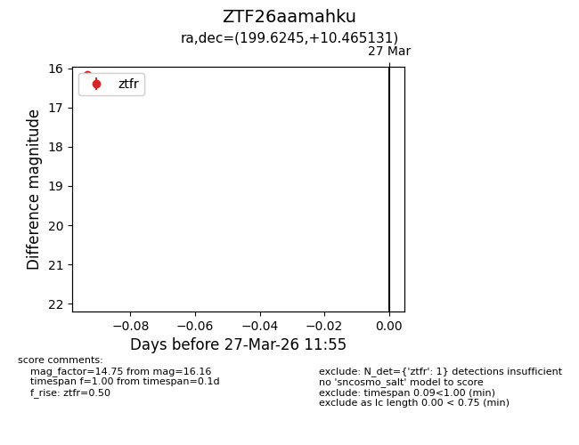
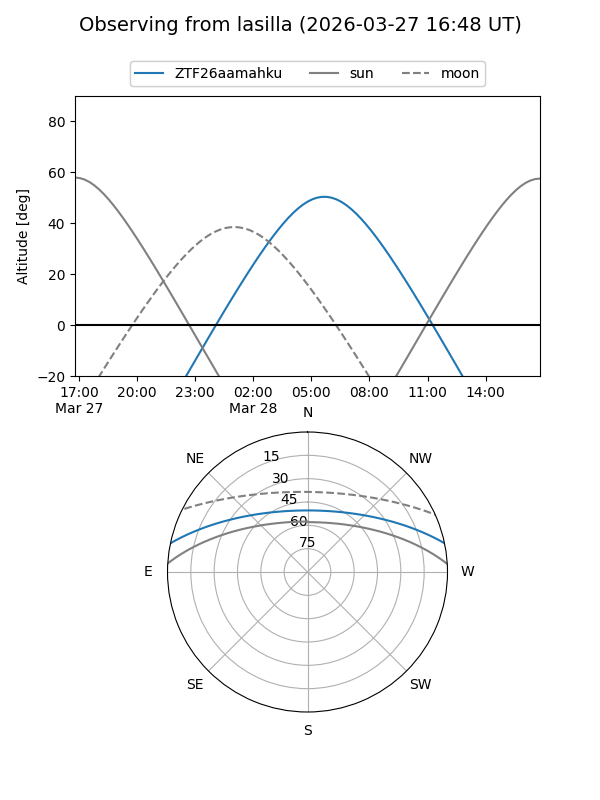
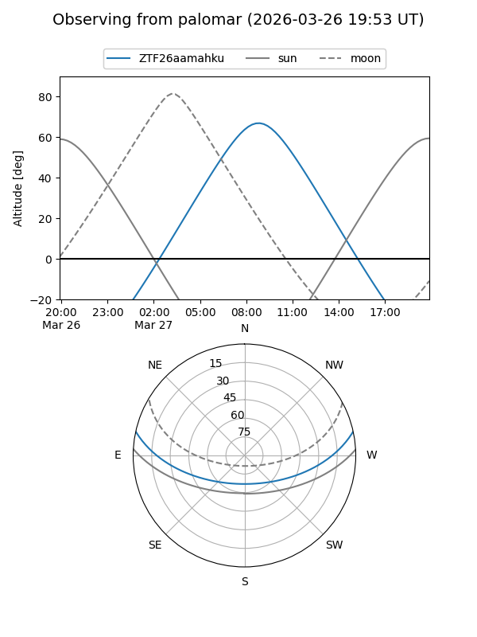

ZTF26aamahku
Target ZTF26aamahku at 2026-03-27 11:58
Aliases and brokers:
FINK: link
Lasair: link
ALeRCE: link
alt names
ZTF26aamahku (ztf,fink_ztf)
Coordinates:
equatorial (ra, dec) = 199.6245,+10.46513
equatorial (HMS+DMS) = 13:18:29.87,+10:27:54.47
galactic (l, b) = (325.1481,+72.15967)
Flags:
Photometry:
last ztfr=16.16
1 ztfr detections
Lightcurve

Visibility


Additional plots